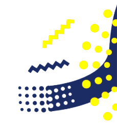

Programas que Manejo
Algunos de los programas en los que me especializo.
Premiere
Software de edición de video desarrollado por Adobe y publicado como parte de Adobe Creative Cloud.
Photoshop
Editor de fotografías desarrollado por Adobe Systems Incorporated.
After Effects
Aplicación que tiene forma de estudio destinado para la creación o aplicación en una composición.